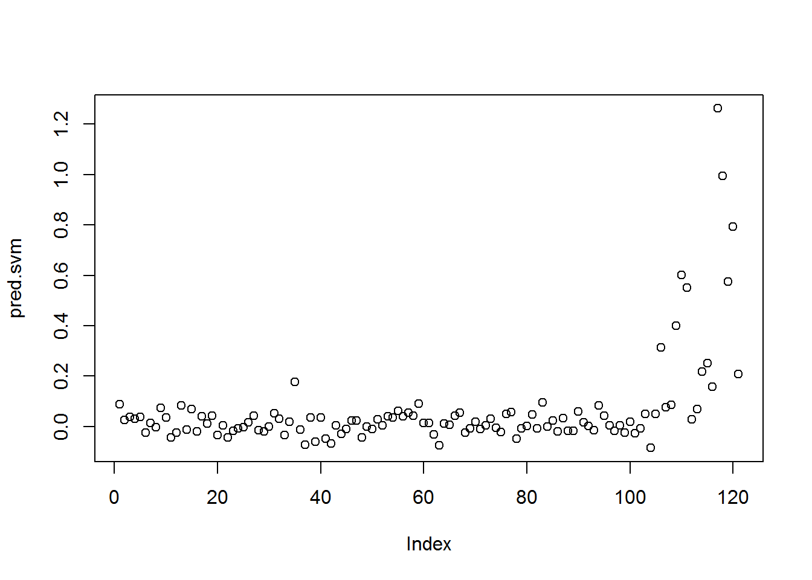

8 5- folds for SUPPORT VECTOR MACHINE 1
data<-read.csv("data/CleanedData.csv",header = T,colClasses=c("NULL", rep(NA, 13)))
data$Sex<- ifelse(data$Sex=="m", 1, 0)
set.seed(700)
V <- 5
n <- NROW(data); n0 <- sum(data$Category==0); n1 <- n-n0;
mis.class.rate = c()
discri.rate=c()
id.fold <- 1:n
id.fold[data$Category==0] <- sample(x=1:V, size=n0, replace=TRUE)
id.fold[data$Category==1] <- sample(x=1:V, size=n1, replace=TRUE)
for (v in 1:V) {
mis.class.rate = c(mis.class.rate, v)
discri.rate=c(discri.rate, v)
train.v <- data[id.fold!=v, ]; test.v <- data[id.fold==v, ];
X.train <- train.v[, -1]; X.test <- test.v[, -1]
scale.train <- scale(X.train, center=TRUE, scale = TRUE)
train.v[,2:14] <- as.data.frame(scale.train)
test.v[, 2:14] <- as.data.frame(scale(X.test, center=attributes(scale.train)$`scaled:center`, scale=attributes(scale.train)$`scaled:scale`))
yobs <- test.v[, 1]
##Tuning Parameter and Best Parameter
tunpar <- tune.svm(Category ~ ., data = train.v,
gamma = 10^(-10:-5), cost = 10^(-4:4),
nrepeat=1, tunecontrol = tune.control(sampling = "cross",cross=V))
bestGamma <- tunpar$best.parameters[[1]]
bestC <- tunpar$best.parameters[[2]]
fit.svm <- svm(Category ~ ., data=train.v, cost = bestC, gamma = bestGamma)
summary(fit.svm)
# 0/1 PREDICTION
pred.svm <- predict(fit.svm, test.v[,-1])
discri.rate[v] = auc(yobs, pred.svm)
print(paste("AUC for fold", v, ":", discri.rate[v]))
mis.class.rate[v] <- mean(yobs != (pred.svm>0.5))
print(paste("Missclassification rate for fold", v,
":",mis.class.rate[v]))
}## [1] "AUC for fold 1 : 0.978538579458355"
## [1] "Missclassification rate for fold 1 : 0.0819672131147541"
## [1] "AUC for fold 2 : 0.878434065934066"
## [1] "Missclassification rate for fold 2 : 0.08"
## [1] "AUC for fold 3 : 0.971296296296296"
## [1] "Missclassification rate for fold 3 : 0.0593220338983051"
## [1] "AUC for fold 4 : 0.993362831858407"
## [1] "Missclassification rate for fold 4 : 0.0852713178294574"
## [1] "AUC for fold 5 : 0.96210407239819"
## [1] "Missclassification rate for fold 5 : 0.0909090909090909"plot(pred.svm)
#AVERAGE AUC AND MISCLASSIFICATION RATE
Average.AUC.svm1<-print(paste("Average of AUC:", mean(discri.rate)))## [1] "Average of AUC: 0.956747169189063"Average.Misclas.svm1<-print(paste("Average of Miss:", mean(mis.class.rate)))## [1] "Average of Miss: 0.0794939311503215"AUC.SVM1<- mean(discri.rate)
Miss.rate.SVM1<-mean(mis.class.rate)Note 5
SVM AUC: 0.96, SVM Missclassification Rate: 0.079↩︎